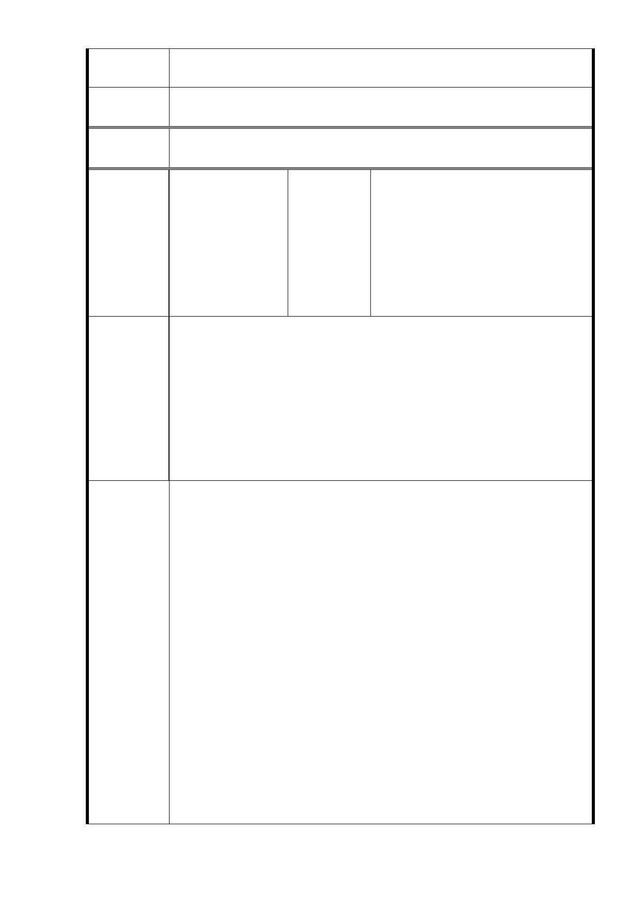

市府回應
意見
1.有關開發強度建議事項，同編號1回復內容。
專案小組
審查結論
同編號 1。
委
決
員
會
議
同編號 1。
大道里辦公處、大仁里辦公處、
編號
20
陳情人
大道里林口街居民自救會羅Ο廉
會長、王Ο福、羅Ο平、曾Ο、
葉Ο鳳、林Ο正、林Ο和、張周
Ο女、吳Ο榮、莊Ο平、傅Ο香
、宋Ο華、孫Ο中、陳Ο發、張
Ο宗、施Ο璇、李Ο茂、陳Ο凱
、陳Ο德
臺北市議會市民服務中心協調臺北市信義區大道里林口街居民
自救會羅吉廉會長等陳情案會議紀錄
一、協調事項：為信義區福德段二小段 319 地號等 11 筆土地（
廣慈博愛院及福德平宅），擬將社福用地容積率從 210％調
陳情理由
高為 400％暨規劃綠帶不足影響日照權及其他相關爭議案
，召開協調會。
二、時間：103 年 1 月 22 日下午 3 時
三、地點：仁愛路 4 段 507 號（7 樓）第五會議室
四、主持人：張議員茂楠
五、 協調結論：
（一）本案為維護林口街 80 巷居民之日照權及爾復完工之社福
大樓能共用綠地及公園，與會陳情方強制具體主張林口街
80 巷之緊鄰社福大樓應退縮 50 米以上以符綠地與社區共
用原則。
（二）本案請社會局將社福大樓以荷包蛋型式設置於綠帶公園中
間，則其三側綠帶能與社區里民共用原則。
建 議 辦 法 （三）為清楚表達居民之立場，已繪製建議都市計劃分區劃設方
案示意圖供市都委會於本次公展納入居民之意見說明圖說
。
（四）本案本次公展請環保局應將本案址納入環評之實施標的物
對象。
（五）本次會議乃於公展期間內召開之會議，故而請市都委會需
於公展完成並依程序提送市都委會審議時，為清楚了解本
次提案之內容是否有被接納及表達陳述意見，請都委會於
召開都市計劃委員會議時，應通知本案今日出席之陳情人
- 55 -